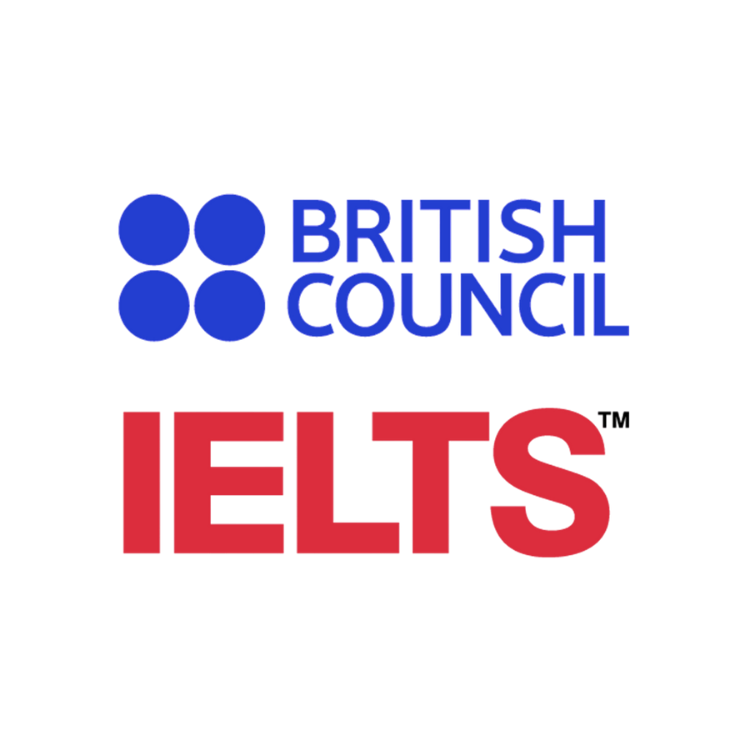

Black White School
Ajudando você a entender o mundo

Teste de Nivelamento IELTS
Avalie seu inglês com questões autorais de nivelamento e feedback instantâneo.
Começar Teste
Resultado da Avaliação
Band Score
0.0
Precisão
0%
Acertos
0
Erros
0
Enviar Resultado para Unidade Jd. Eldorado
Enviar Resultado para Unidade Pq. Ecológico
Revisão e Feedback